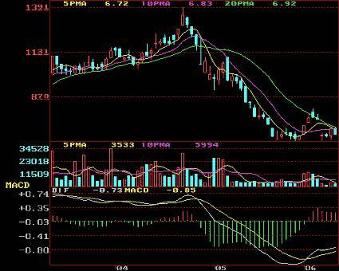
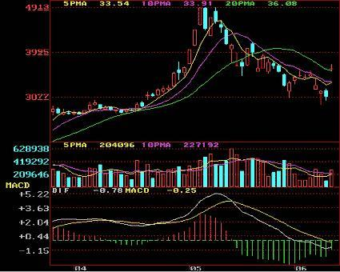

09:48


K线技巧
K线是什么呢？对与炒股和外汇的人并不陌生，K线是指骨片在走势中的K线图，最早的时候由日本的一个米商用来记录一天、一周或者一个月中米价涨跌的行情图，后来被引入到了股市，因为K线图的直观、立体感、并且鞋带信息量大的特点，所以富含了丰富的东方哲学思想，同时也出现了一些外汇k线图经典图解，很多股票学校和交流群里都会给大家讲解一些K线的经典图解。
由于习惯，当前市场上，币市的行情也用K线来表示。熟练判断并运用K线知识，是在币圈脱颖而出的必要条件。
1、顶部三只乌鸦:
在上升行情中，经过连续上涨之后，在高区接连出现三根高开低收的阴线，表明空方已经占据主导地位，卖盘强劲，是股价暴跌的前兆。

2、高位下降覆盖线:
股价连续上扬数天之后，突然高开低收，大阴线覆盖前一日的阳线，表明多方气数已尽，空方反扑开始，大量卖盘涌出，股价即将大跌。


写死，我会给内容